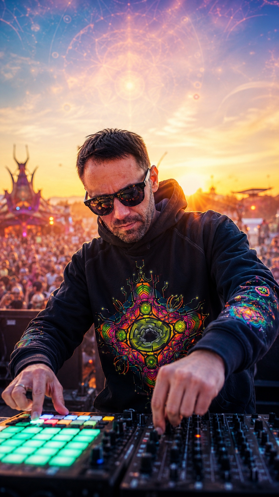
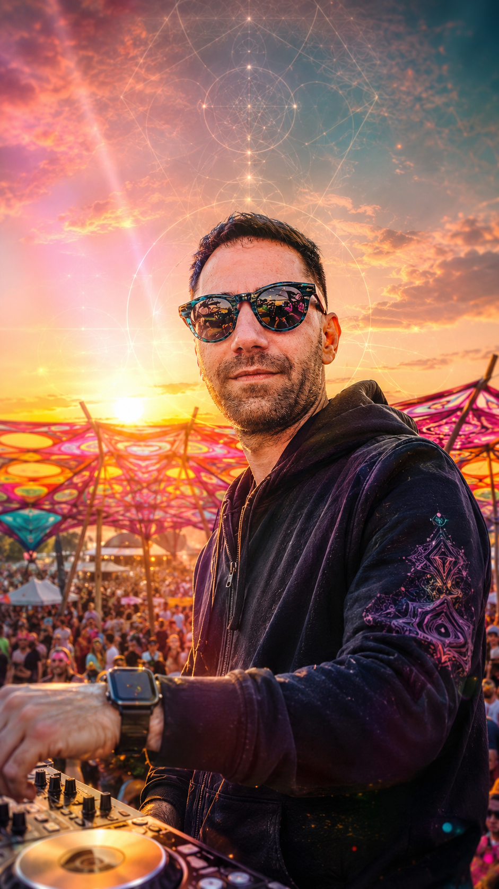

klePSYdra is the psytrance project of Denys — DJ and current head of Vertigo Records (Berlin, est. 2006), the 20-year psychedelic label whose catalogue runs from Goa Gil and Man With No Name to Psykovsky and OOOD. Light, driving, peak-time and morning psytrance — pure, uplifting energy built for main stages and sunrise floors. No dark, no forest: just bright, hypnotic flow.


Standard psytrance booth — 2× CDJs + mixer, or controller setup. Full technical and hospitality rider on request. Berlin-based, travels across the EU.
Booking via Vertigo Records. Fee on request — based on date, region and travel. Double Impact package available with SEDDLER (techno) for multi-stage festivals.
info.vertigorecords@gmail.com